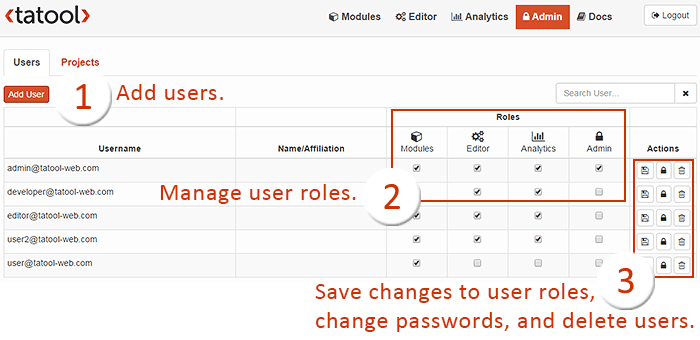
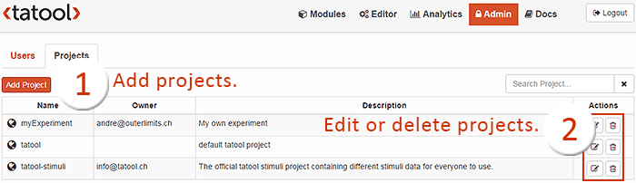

The tab Admin allows Administrators to manage projects and users. Take a look here to learn more about how to set up users and projects.

Screenshot of the Admin tab for managing users

Screenshot of the Admin tab for managing projects